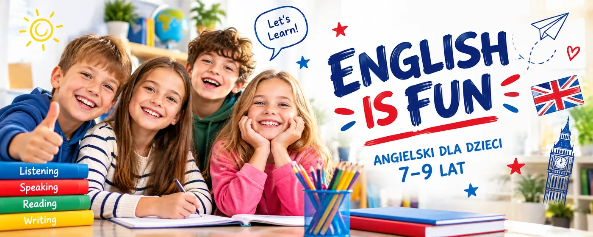
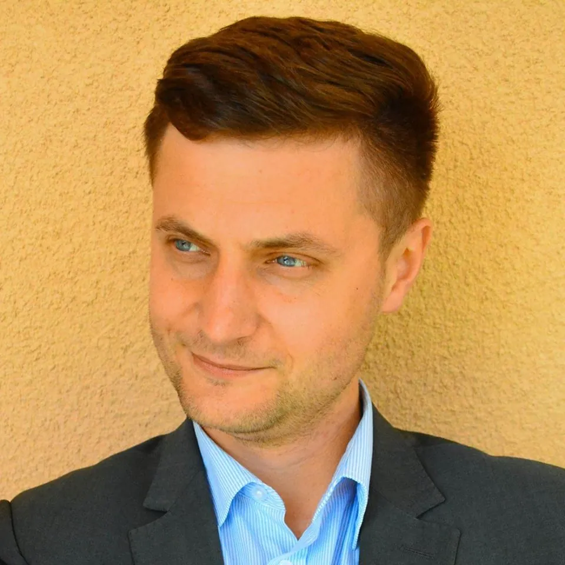
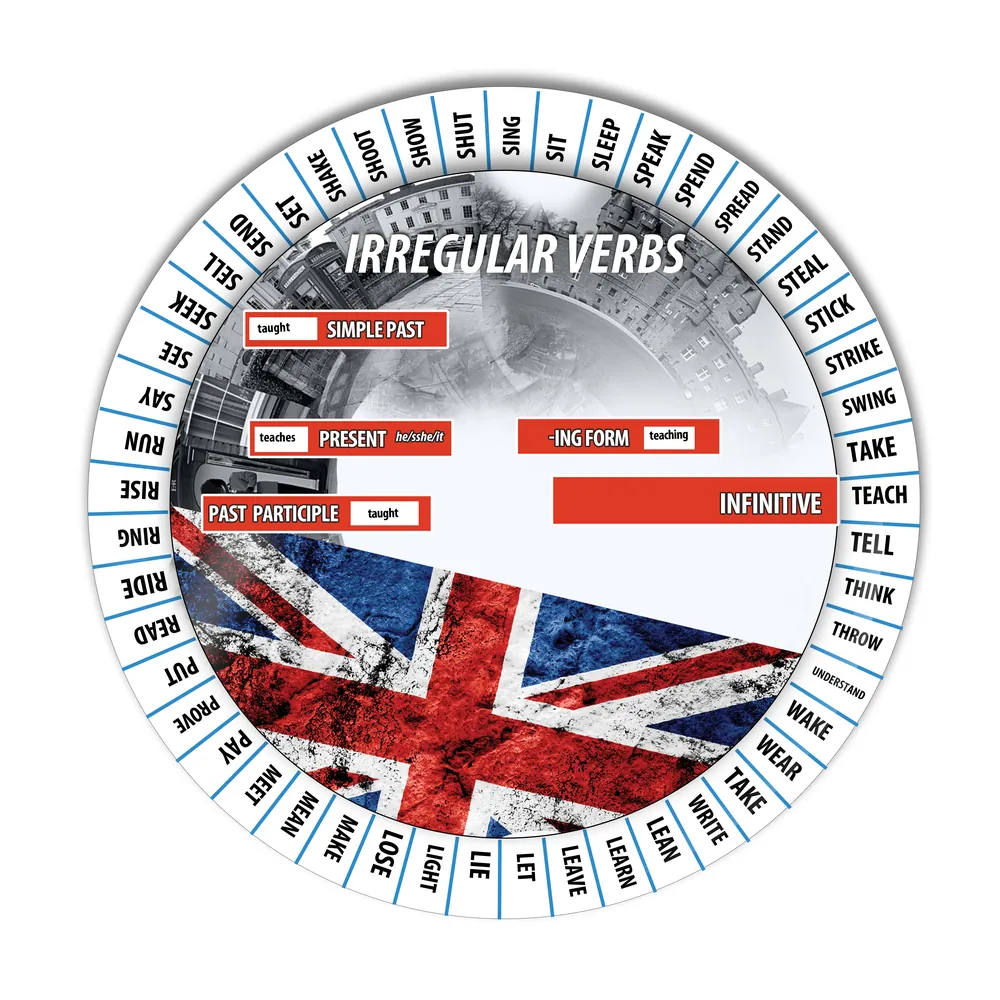

7-9lat
English is Fun
Klasy I-III. Angielski przez zabawę, piosenki, gry i projekty. Dziecko zaczyna mówić bez strachu przed błędem.
45 min / tydzień50 zł
Od 2006 roku uczymy dzieci, młodzież i dorosłych. Małe grupy, poziom dobrany po bezpłatnym teście i przygotowanie do egzaminu ósmoklasisty i matury.
Każdy kurs to jedno spotkanie w tygodniu, w małej grupie dobranej wiekiem i poziomem. Ceny za jedną lekcję, płatne w ratach albo z góry.
Klasy I-III. Angielski przez zabawę, piosenki, gry i projekty. Dziecko zaczyna mówić bez strachu przed błędem.
Klasy IV-VII. Porządkujemy materiał ze szkoły, nadrabiamy zaległości i ćwiczymy mówienie w praktyce.
Powtórka całego materiału, arkusze CKE, strategie egzaminacyjne i próbny egzamin na koniec kursu.
Autorski program dla liceum i technikum: nadrobienie zaległości albo rozwijanie języka ponad program.
Poziom podstawowy i rozszerzony. Prowadzą egzaminatorzy z uprawnieniami CKE, na koniec próbna matura.
Kurs nastawiony na rozmowę zamiast tabelek. Dla osób, które zaczynają od zera albo wracają po latach.
Średnia cena lekcji prywatnej to 80-100 zł za 45 minut. U nas lekcja w małej grupie kosztuje od 50 zł, bez opłaty wpisowej, z certyfikatem po kursie.

Zajęcia ruszyły 7 września 2026 r. Trwa nabór uzupełniający do grup. Grupę dobieramy po krótkim teście i rozmowie, to nie jest egzamin.
Zapisy telefonicznie, mailowo albo na miejscu w szkole w Dukli, w godzinach otwarcia.
Chcemy, żeby uczeń wychodził z zajęć z większą wiedzą, większą swobodą i większą pewnością siebie. Speakers' Corner: Better English. Brighter Future.
Więcej uwagi nauczyciela i więcej okazji do mówienia na każdej lekcji.
Bezpłatny test diagnostyczny i rozmowa. W razie potrzeby można zmienić grupę w trakcie kursu.
Mówienie, słuchanie, czytanie i pisanie, a słownictwo i gramatyka w służbie rozmowy.
Regularnie sprawdzamy postępy, a rodzice dostają informacje o pracy i wynikach dziecka.
Bezpłatne konsultacje z lektorem i stały kontakt rodziców z nauczycielem.
Przestronna sala z dotykową tablicą, dzięki której lekcje są różnorodne i angażujące.

Speakers' Corner prowadzi mgr Sławomir Chłopecki. Szkoła działa w Dukli od 2006 roku i przez ten czas sposób nauczania dopasowywaliśmy do wieku, poziomu i możliwości naszych uczniów.
Kursy przygotowujące do egzaminu ósmoklasisty i matury prowadzą egzaminatorzy z uprawnieniami Centralnej Komisji Egzaminacyjnej, więc uczniowie wiedzą dokładnie, czego oczekuje się od nich na egzaminie.
mgr Sławomir Chłopeckinauczyciel języka angielskiego
Nasze własne narzędzie do nauki: zamiast tabeli czasowników nieregularnych uczeń widzi wszystkie formy naraz, także końcówki -s, -es, -ies, -ing i odmiany amerykańskie. Wystarcza aż do poziomu B2, czyli matury rozszerzonej.
Używamy go na lekcjach, sprawdza się też jako wyposażenie pracowni językowej albo nagroda w konkursie.

Poza nauką języka tłumaczymy teksty z angielskiego i na angielski. Cenę ustalamy indywidualnie, zależnie od liczby znaków, terminu i rodzaju tekstu.
Zadzwoń, napisz albo wpadnij do szkoły. Jesteśmy na I piętrze budynku Informacji Turystycznej, nad poczekalnią PKS.